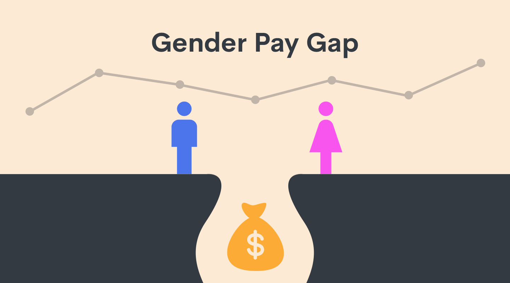

The salary gap in software development#

For over two centuries, the fight for equal treatment of men and women has slowly marched onwards. With slow developments across the decades, most Western countries have enshrined equal rights into their constitutions in the present day. While this has resulted in much progress in areas where identifying discrimination is simple (such as the right to access education or other services), the salary difference between genders has remained an issue where many believe sexism to be prevalent. Studies show that, to this day, a marked difference exists between the compensation of men and women (Boll & Lagemann, 2019). Others claim that much of this difference is attributable to non-discriminatory external factors. These factors, such as age, education or work experience, would explain the salary gap without gender. The contrast in these perspectives suggests that there may be differences in their accuracy present between fields of work.
As the authors work within the field of software development, we selected that field for further insights into the perspectives on the salary gap. The primary data source is an annual developer survey conducted by the web forum Stack Overflow, with nine years (2014 to 2022) combined for analysis. To seek explanations for the differences in salary between genders, we analysed various factors such as age, professional experience and the cultural effects of the countries.
First, however, we assessed the current state of the salary gap. By averaging all the responses to the Stack Overflow survey, we calculated the mean yearly salary of software developers (discarding outliers above ＄250,000 yearly). We found that male developers were paid an average of ＄62,264 annually, while female developers were paid ＄59,289. If we define the gender pay gap as the difference between a man’s and a woman’s salary relative to that of the man’s (\(\frac{S_{\textrm{man}} - S_{\textrm{woman}}}{S_{\textrm{man}}}\)), then the base pay gap would show women earning around 4.8% less. While smaller than in other fields of work (Boll & Lagemann, 2014), this difference is still noticeable. As such, we searched for the reasons behind this pay gap.
Life experience#
It is well known that older employees are paid more. Therefore, one argument favouring a non-discriminatory salary difference could be that the average male respondent is older than the average female. When we analysed our dataset, we found that it was indeed so that the average male respondent was slightly older (around two years). Upon comparing the salaries of respondents with their given ages, we found the previously mentioned pattern of generally increasing salaries to be present in software development (except for developers approaching retirement age):
As such, part of the difference in salary is explained by the different age distributions of the genders.
It should be noted that the lowest two age categories analysed (18-24 and 25-34) have a female-favoured pay gap, in contrast with the general male-favoured pay gap calculated in the beginning. From one perspective, this could be seen as a sign that the salary gap is ‘solved’ for younger developers, with its presence at higher ages being a holdover from a previous time. However, those that believe gender discrimination to be a problem might point to studies such as Li et al., 2022, in which women of childbearing age (who might decide to take maternity leave) are proven to be discriminated against by employers. This explanation is a plausible alternative to the previous, with the ages at which discrimination becomes a problem lining up appropriately.
Nevertheless, while age alone can occasionally determine income, practical experience in programming can also be an essential factor.
Work experience#
Typically, developers with more professional experience will receive a higher salary. To expand further on the work of the previous graph, we calculated the average years that male and female developers had spent coding professionally:
These results showed that male respondents had, on average, more professional experience. At first, this would seem to be another convincing argument favouring the non-discriminatory perspective. However, when we calculated the influence of professional experience on salaries separately for men and women, we saw that the above was an incomplete picture:
The above chart shows that, while for the first couple years of a developer’s career, gender doesn’t play a prominent role, a gap arises after five years. This gap widens further at ten years of professional age, meaning that a woman with the same level of professional experience as a man would benefit significantly less from their expertise. This increased difference is present when many women might decide to start a family (supposing they joined the workforce aged 20), lining up with the previously mentioned issue of discrimination against women around 30.
Education#
The subsequent potential influence on the salaries of developers we sought to analyse was education. Similar to the previous factors, it could be that the average male respondent had a higher level of education, justifying their increased pay. However, upon combining information about the education level of respondents with their gender, the following visualisation showed little difference:
The above diagram shows that levels of education were approximately equal for both male and female respondents, slightly favouring female respondents. Since all educational levels had somewhat more women reaching them, the argument from education would suggest that women would earn a higher salary. Therefore, this factor cannot explain the salary difference being the opposite of that, and we turned to yet another aspect of the respondents for more insights.
Different positions#
The final factor we analysed was the type of positions that respondents held. The argument against a discriminatory pay gap was that perhaps female developers tended towards filling lower-paying jobs. If this argument holds, it would mean that the pay gap could be explained as a result of different aspirations.
Separating the various answers of respondents into categories based on the type of position they described to be working in, we looked at the pay gap in diverse functions based on the ratio of male developers to female developers (where a ratio of 10 meant that there were ten male developers per female developer). This analysis resulted in the following graph:
This graph shows that jobs with more female developers have an increased gap in salary between genders. This trend might suggest a self-fulfilling prophecy, where positions popular among female developers pay those female developers less, instead of female developers simply applying to lower-paying jobs. However, it is essential to note that this trend could be caused by other unrelated factors or be entirely coincidental. Therefore, the most we could definitively say regarding different positions and gender was that no conclusive argument could be supported for either perspective.
Different countries#
The final factor we analysed was the countries respondents originated from. With distinct cultures and legislation worldwide, we were interested in exploring whether some countries or regions might have different levels of pay inequality than others.
Graphing the course of the gender pay gap across recent years for some countries with the most survey respondents, we see much variance in the individual countries year by year but a slight downward trend in general.
The three graphed countries with the highest pay inequality in the first year of the dataset (Poland, Spain and the United Kingdom) all saw a significant decrease in said pay gap over the nine years of the dataset. Many countries (including Poland) show large swings in the average pay gap between years, likely due to the low sample size present. Similarly, the consistency of the United States can be explained by the extremely high (over 60% in many years) number of respondents originating from there.
In many cases, notable drops in the pay gap can be linked to legislative changes in the countries or activism on the topic. The slight improvements to pay equality in 2022 compared to 2014 are a positive sign, and the general trend in most countries suggests that pay inequality may drop further in the coming years.
Culture and age#
The world map, showing the salary differences between genders for various age groups, gives a novel insight into the development along the age axis. Here, we combined information about respondents’ salaries with the country they live in, calculating the pay gap per country. We then further divided these pay gaps based on respondents’ ages, displaying the changes in relative compensation across the globe.
The above map shows that countries have a low pay gap between genders for younger developers (under 25). Some countries even have a favourable pay gap for women in this younger demographic category. However, approaching 30 years of age, this pay gap has become far more prominent in many countries (as seen by the blue colour, indicating a male-favoured pay gap). This rapid switch again supports the previously mentioned discrimination against women aged appropriately to start a family. Furthermore, in many cultures, it is traditional for women to leave the workforce to raise children, reducing their work experience relative to their age should they seek employment later. Therefore, the increased pay gap favouring men in the age groups 35-44 and 45-54 can be explained by cultural factors and discrimination. Data for ages 55 and above is sparse, and little can be discerned from these age categories.
Summary#
Pay inequality is a problem that has plagued women for centuries and may continue to do so for years into the future. When salaries in software development were investigated for gender bias, male developers were shown to earn noticeably more than female developers. To gain more insights, an analysis of four factors that might instead explain this difference was conducted using the Stack Overflow developer survey. Findings based on age and professional experience offer non-discriminatory explanations for part of the pay gap. However, further examination of the effects of professional experience, education, and job type suggested the presence of discrimination within the salaries of software developers. A final exploration of pay gaps across different countries portrayed the complexities of how culture can influence gender inequality while indicating that improvements have taken place over the last nine years. While many potential explanations for the pay gap have been illustrated, further research and more data would be necessary to accept any position conclusively.
References#
Christina Boll & Andreas Lagemann, Gender pay gap in EU countries based on SES (2014), European Commission, 2014
Christina Boll & Andreas Lagemann, The Gender Pay Gap in EU Countries — New Evidence Based on EU-SES 2014 Data, Springer, 2019
Li, King King and Li, Lunzheng and Si, Wei and Xu, Zhibo, Childbearing Age and Gender Discrimination in Hiring Decisions: A Large-Scale Field Experiment, Shanghai, 2022